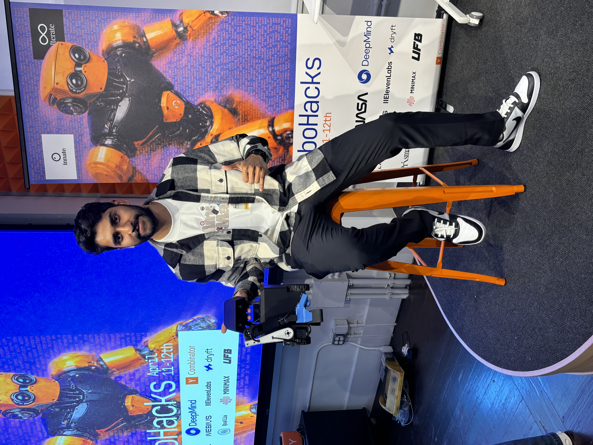
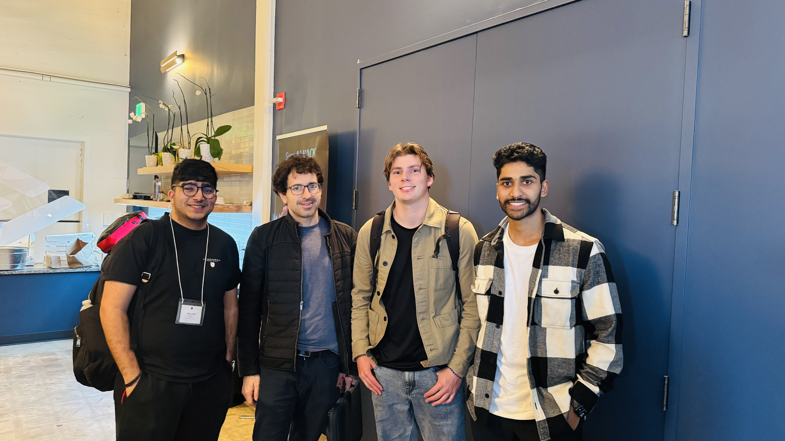
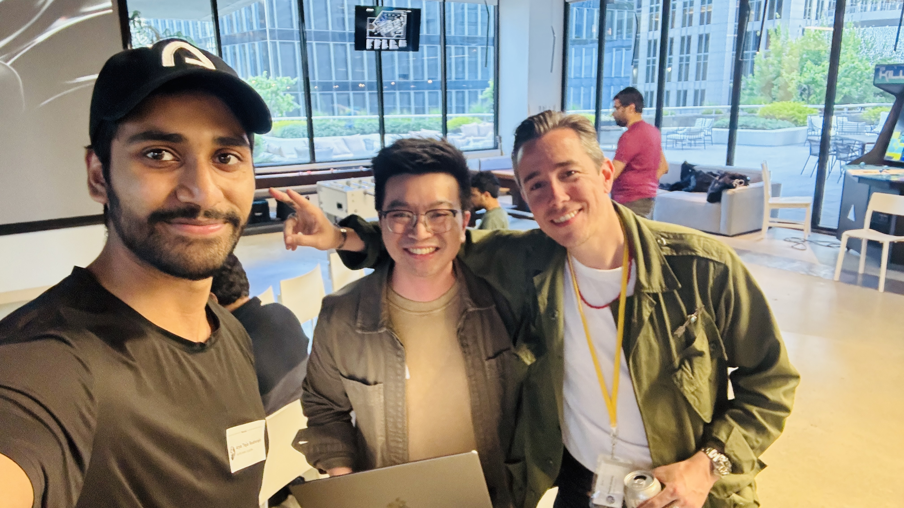
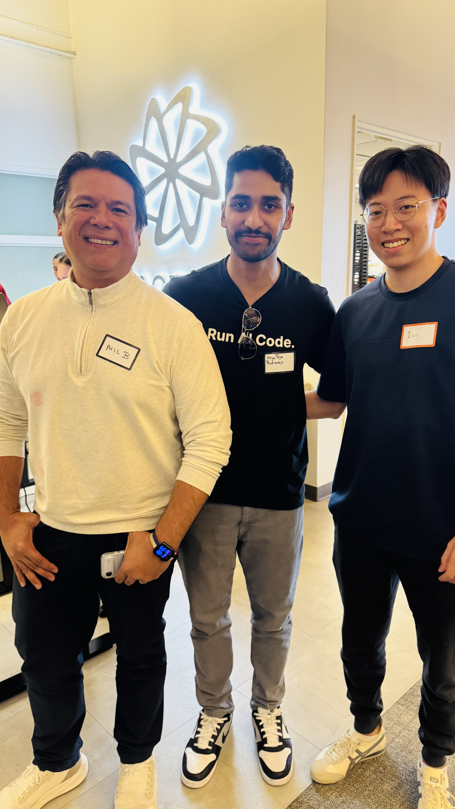
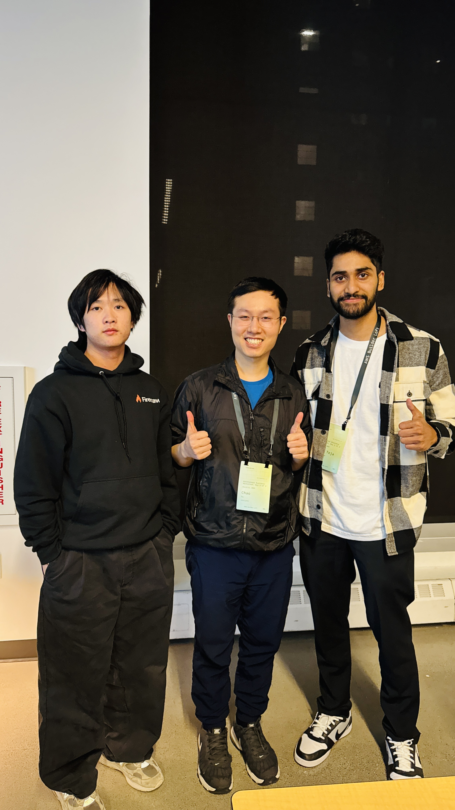
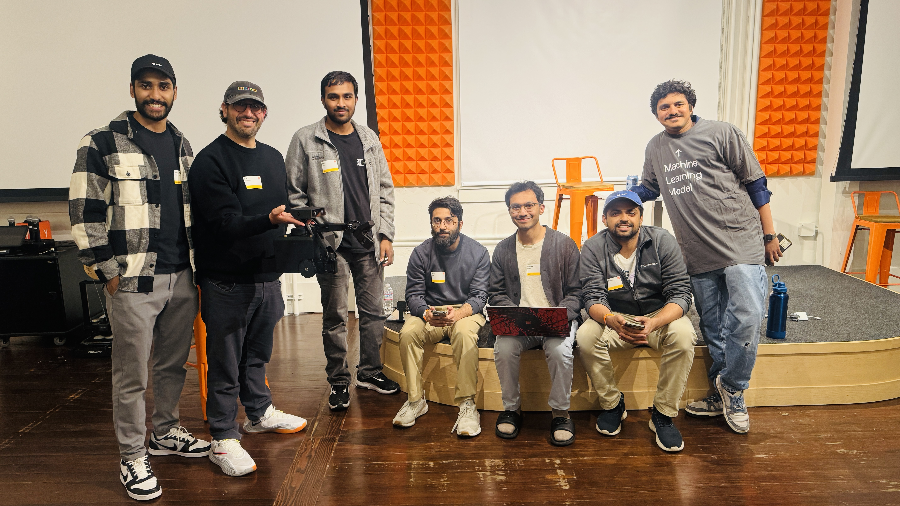

I'm Arya Teja Rudraraju — solo founder building the agent-native stack: an AI-agent OS, consulting that ships, and the merch for people who live in the terminal.
Read the writing →





Builder events & team chapters across SF, HK, and the YC orbit.
A long-form argument with diagrams, screenshots, and source links.
What consulting looked like end-to-end, and the part worth copying.
Notes from a talk, distilled into a working principle.
Product & AI-agent OS — the system I'm building for serious researchers and builders.
Explore →AI consulting that ships. Revenue-first, pragmatic, done with you.
Explore →Agent-native merch for people who live in the terminal.
Explore →